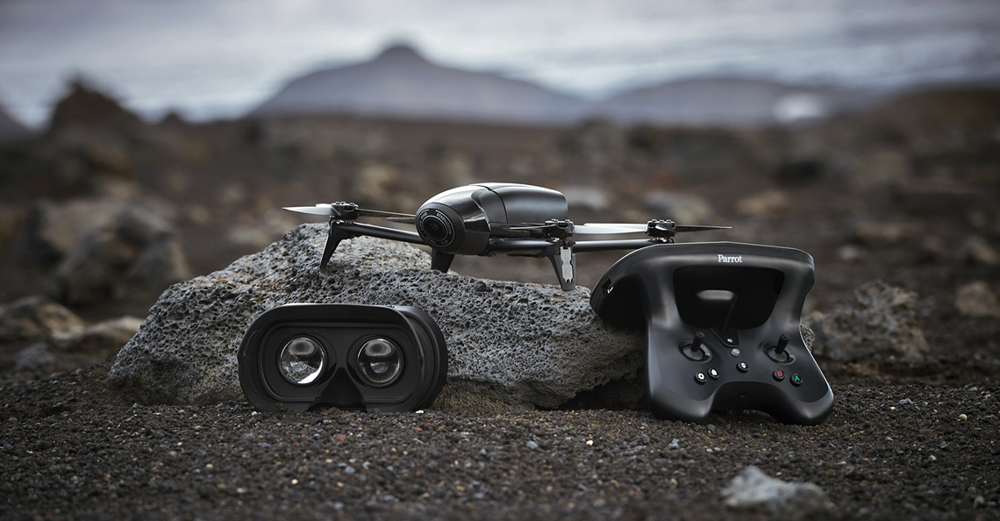

Parrot introduceert Bebop 2 Power drone
18 september 2017
Parrot is na lange tijd weer actief in de drone wereld. Eerder deze week kwam de dronefabrikant met een nieuwe lijn rondom de Parrot Mambo drone en nu volgt ook een nieuwe versie van de Bebop 2. De Parrot Bebop 2 Power heeft een langere vliegtijd en wordt geleverd met de nieuwe Cockpit Glasses 2. Daarnaast beschikt de drone over een handvol nieuwe slimme functies.
Lees meer
Kleine drone met HD camera wint GoPro prijs
18 september 2017
Robert McIntosh is met zijn dronevideo in de prijzen gevallen bij GoPro. Hij maakte een vette video met een kleine drone waarop hij een GoPro monteerde. De video is achteruit afgespeeld waardoor een onthullend effect ontstaat.
Lees meer
Opvouwbare bezorgdrone voor bezorging op iedere locatie
17 september 2017
Onderzoekers van École Polytechnique Federale de Lausanne (EPFL) hebben een drone ontwikkeld welke volledig omringd is door een kooi. Dankzij de kooi kan de ontvanger de drone letterlijk opvangen op de meest onmogelijke locaties. Door deze unieke constructie kan de drone bezorgingen uitvoeren waar andere bezorgdrones niet kunnen komen.
Lees meer
Delft Dynamics toont DroneCatcher op DSEI 2017
17 september 2017
DroneCatcher is een anti-drone oplossing bedacht en ontwikkeld door Delft Dynamics. Het Nederlandse bedrijf heeft meer dan tien jaar ervaring in het maken van drones. Zowel de soft- als hardware van het DroneCatcher systeem zijn op maat ontwikkeld. Het project van Delft Dynamics wordt ondersteund door de Nederlandse Marechaussee, politie en justitie.
Lees meer
Drone Champions League in Brussel trekt 22.000 bezoekers
25 september 2017
Afgelopen weekend stond Brussel in het teken van drones en trokken ruim 22.000 mensen naar de Belgische hoofdstad om het spektakel van dichtbij te bewonderen. Verschillende racing teams namen het tegen elkaar op tijdens de wedstrijd van de Drone Champions League.
Lees meer